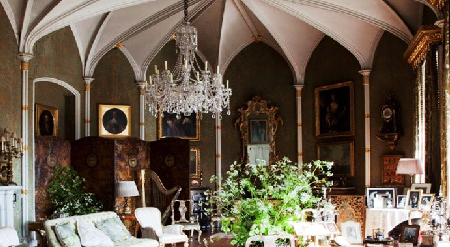

Earls of Ross

William, the 3rd Earl of Rosse was able to build this telescope with the help of his wife Mary's fortune. It was a great engineering feat because he had to work out the ability to raise and lower the immense tube, and also to cast the mirror, or speculum, himself. It took many experiments to find the right combinations of metal to use for this. The metal was then heated in a furnace in the moat by turf (or peat) from the bogs which comprised much of his estate. The next problem he had was in cooling the speculum. The first two mirrors cracked as cooling happened too quickly. He eventually made two mirrors which were inter changed and removed for polishing as the damp caused them to mist over. This in itself was another engineering feat, and a small railway line was built to transport the massive mirrors to and from the workshops for polishing.
The Castle

The Award-Winning Gardens of Birr Castle Demesne in Ireland are both rich in amazing feats of science and engineering, as well as rare trees and flowers, wonderful wildlife, walks along peaceful rivers and the lake. Celebrating 400 years in 2021, this remarkable family have resided at the romantic and inspirational setting of Birr Castle Demesne, that is now home to the 7th Earl of Rosse. The Parsons family invite you to explore one of the most extraordinary places in Ireland. Created over generations it is an environmental and a scientific time capsule.
The Demense

Water is a prominent feature of the Gardens. Wherever you walk you are always close to water. Cross over the enchanting waterfall above the gravity fed fountain in the Victorian Fernery, or follow the River Walk to the double bridges where the Little Brosna river and Camcor river meet.
Gardens

The gardens are home to an abundance of rare plants, collected by the Earls of Rosse on their travels around the world over the last 150 years. Within the 50 hectares you will find 50 champion trees, over 5000 species of plant as well as rivers, lake and waterfalls. It now has plant material collected and subscribed for by 3 generations of the family, as well as some of the most famous plant hunters, past and present. It was the first garden in Ireland to receive specimens of Metasequoia glyptostroboides (Dawn Redwood) after its discovery in China in 1945. Recent plant hunting expeditions by the current Earl and Countess include Kyrgyzstan, Pakistan, Iran, South Africa, New Zealand, China and Bhutan.